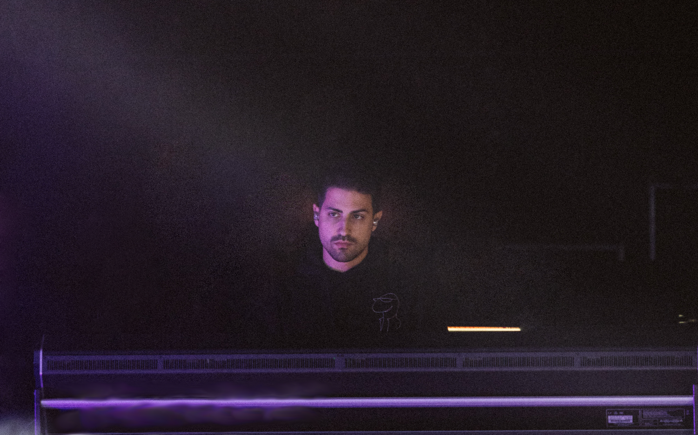

Guilherme "Will" Vales, live and studio engineer based in Lisbon, PT.
parece que faço som e misturas, e assim.
Monitor Engineer, FOH Engineer and Playback Engineer on live shows and TV. Also a Mastering Engineer, and sometimes Mixing and Recording Engineer.

Papillon
Monitor Engineer•
Sara Correia
Monitor Engineer•
Da Weasel
Playback Engineer•
Rita Rocha
FOH Engineer•
lhast
FOH Engineer
also collaborated with
Capitão Fausto
Monitor Engineer & Sub for Manuel San Payo•
Conjunto!Evite
FOH Engineer•
Ala dos Namorados
Monitor Engineer•
João Gil
FOH Engineer as sub for Cajó•
Frankie Chavez
FOH Engineer as sub for Manuel San Payo•
Diogo Clemente
FOH Engineer as sub for Gui Afonso•
Discórdia
FOH for A Mesa é Redonda•
Dapunksportif
FOH Engineer as sub for Ricardo Riquier